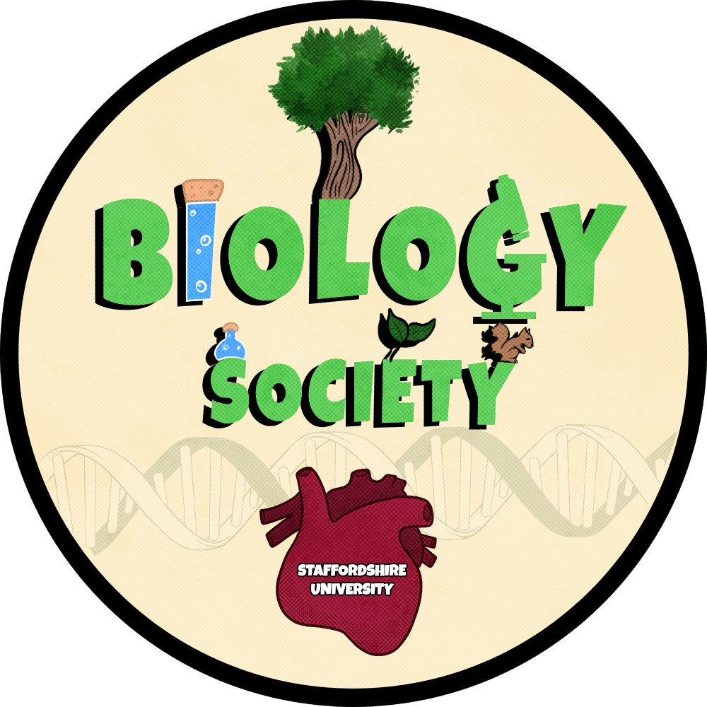
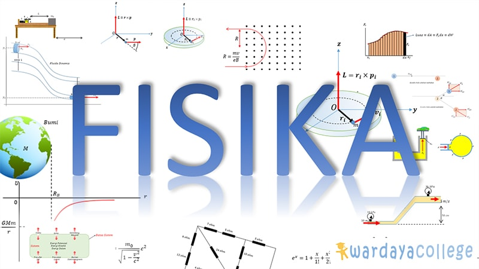
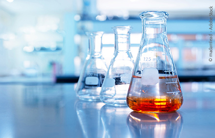

|
Biology

|
Physics

|
Chemist

|
|

Antara Zeolit dan MOFBeberapa tahun yang lalu, Lestari (2014) menulis bahwa metal-organic frameworks (MOFs) merupakan material berpori yang menjanjikan untuk berbagai aplikasi di masa depan. Namun, jauh sebelum kemunculan MOF, ada material lain yang lebih dulu diaplikasikan di banyak sektor terutama dunia industri. Yilmaz dkk. (2012) mengatakan bahwa suatu padatan dapat dipandang berpori apabila kekosongan pada strukturnya cukup besar untuk mengakomodasi molekul tamu. Dalam industri kimia, kemampuan untuk membawa molekul masuk dan keluar dari suatu material berpori telah terbukti sangat menguntungkan. Semakin seragam ukuran pori-pori dalam suatu padatan, semakin baik sebuah material berpori untuk diaplikasikan. Keseragaman porositas merupakan hasil dari struktur yang sangat teratur, seperti dalam kerangka kerja (framework) zeolit atau MOF dengan pori/channel yang merupakan bagian dari blok pembangun (unit repetitif pada struktur). Zeolit Metal-organic framework (MOF) Furukawa dkk., (2013) menyatakan bahwa MOF dapat dibuat dengan menautkan unit-unit anorganik dan organik. Unit organik berupa ditopik atau karboksilat organik politopik (dan beberapa molekul serupa yang bermuatan negatif lainnya) yang ketika ditautkan pada unit yang mengandung logam, akan diperoleh struktur kristalin MOF yang kerangkanya kuat dengan porositas lebih besar yaitu sekitar 50% dari volume kristal MOF. Nilai luas permukaan MOF sejenis ini yaitu antara 1000 hingga 10000 m2/g. Angka ini jauh melampaui material berpori lain seperti zeolit dan karbon. Di bidang medis, MOF dapat digunakan pada pengantaran obat terutama untuk terapi dan diagnosis kanker. Banyak senyawa yang berbasis MOF telah dikembangkan pada tingkat aplikasi nanomedis, namun Wu dan Yang (2017) melaporkan bahwa masih terdapat banyak tantangan yang perlu diatasi sebelum nanokomposit ini dapat diterapkan secara klinis. Meskipun banyak kemajuan dalam pengembangan membran zeolit lapis-tipis pendukung, pemisahan gas menggunakan membran zeolit untuk digunakan dalam skala industri belum dapat terwujud karena harganya masih relatif mahal. Namun secara umum, Rangnekar dkk. (2015) menilai bahwa peningkatan performa membran zeolit pendukung dan MOF untuk skala industri tetap akan menjadi tantangan masa kini. Keberadaan MOF sebagai material “pendatang baru” merupakan kabar baik bagi industri. Namun, bukan berarti dunia akademik dan industri berhenti untuk mengembangkan kemampuan zeolit yang telah lebih dulu diaplikasikan di banyak industri. MOF menjadi angin segar karena memberikan alternatif lain yang penuh potensi untuk diaplikasikan. |
|||